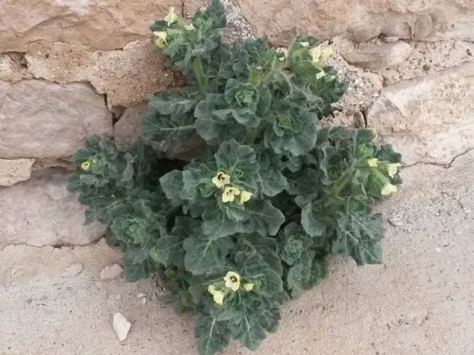

Ayuntamiento de Senés
JARDIN BOTANICO DE ESPECIES AUTOCTONAS DE SENES

Hyoscyamus albus

El beleño (Hyoscyamus albus) es una planta herbácea anual o bienal perteneciente a la familia de las solanáceas. Se caracteriza por su aspecto pegajoso, su olor intenso y sus propiedades tóxicas.
Presenta tallos robustos y hojas grandes, de forma irregular y textura viscosa. Sus flores son muy características, de color amarillo pálido con nervaduras oscuras, formando una estructura llamativa y fácilmente reconocible.
El beleño se distribuye por regiones mediterráneas y zonas templadas, creciendo en terrenos alterados, ruinas, bordes de caminos y suelos ricos en materia orgánica.
En el entorno de Senés, aparece en zonas removidas y cercanas a asentamientos humanos.
El beleño contiene alcaloides potentes como la hiosciamina y la escopolamina, lo que le confiere propiedades medicinales en dosis controladas, pero también una elevada toxicidad.
Tradicionalmente se ha utilizado en medicina, aunque siempre bajo supervisión especializada.
El beleño simboliza el misterio y el peligro, debido a sus propiedades alucinógenas y tóxicas.
Ha estado asociado a prácticas antiguas y a conocimientos tradicionales sobre plantas medicinales.
En Senés, el beleño era conocido principalmente por su toxicidad, siendo evitado en la mayoría de los usos cotidianos.
Aunque es una planta peligrosa, se utilizaba en enjuuagues para el dolor de muelas.
El beleño florece entre primavera y verano, produciendo flores muy características.
El beleño ha sido utilizado históricamente en rituales y como planta medicinal en diversas culturas.
A pesar de su toxicidad, ha tenido un papel importante en la historia de la medicina tradicional.